A self-hosted admin panel for Linux servers. Terminal, services, packages, containers, files, firewall, and more — no VPN, no SSH tunnels required.
curl -sSfL https://raw.githubusercontent.com/ultherego/Tenodera/main/tenodera.sh | sudo bash
Real-time visibility and full control over your infrastructure — from a single, self-hosted web interface.
Agents connect outbound to the gateway over WebSocket. No open ports, firewall exceptions, or VPN tunnels required on managed hosts.
Uses existing system accounts — local users, FreeIPA, SSSD, LDAP. No separate user database to manage.
Live charts for CPU, memory, disk I/O, and network — streamed over WebSocket with 90-point rolling history. No page refresh needed.
Full PTY running in the browser via xterm.js. Opens a shell as the authenticated user — no root shell exposed. Auto-copy on text selection.
Manage unlimited servers from a single panel. Switch between hosts with one click — all pages instantly show data from the selected host.
Services, packages, containers (Docker/Podman), file manager, firewall, DNS, TLS certificates, cron jobs, kernel dumps, and audit logs.
A clean, dark interface built with React — designed for long admin sessions.
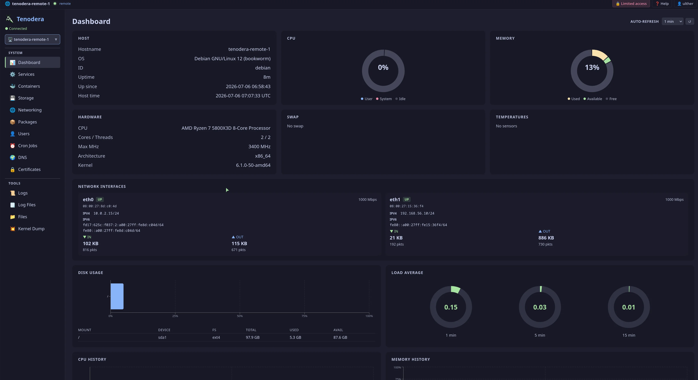
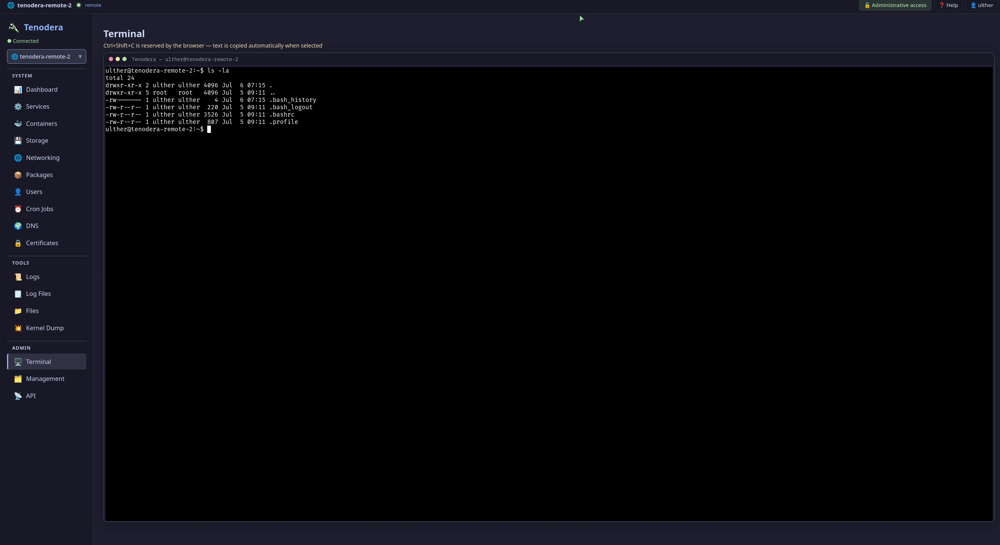
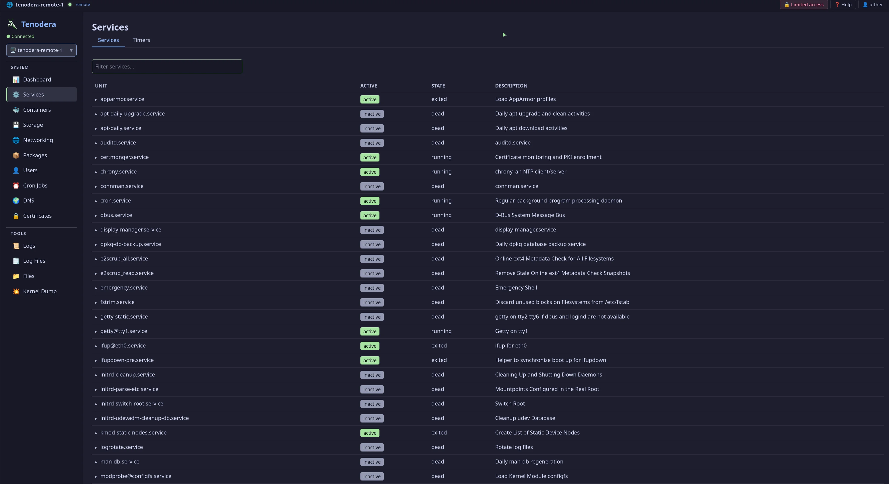
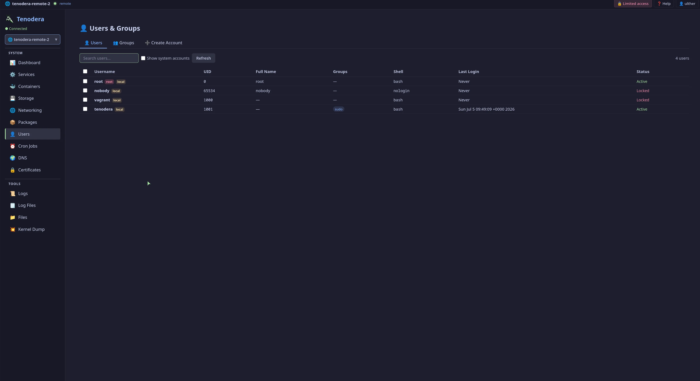
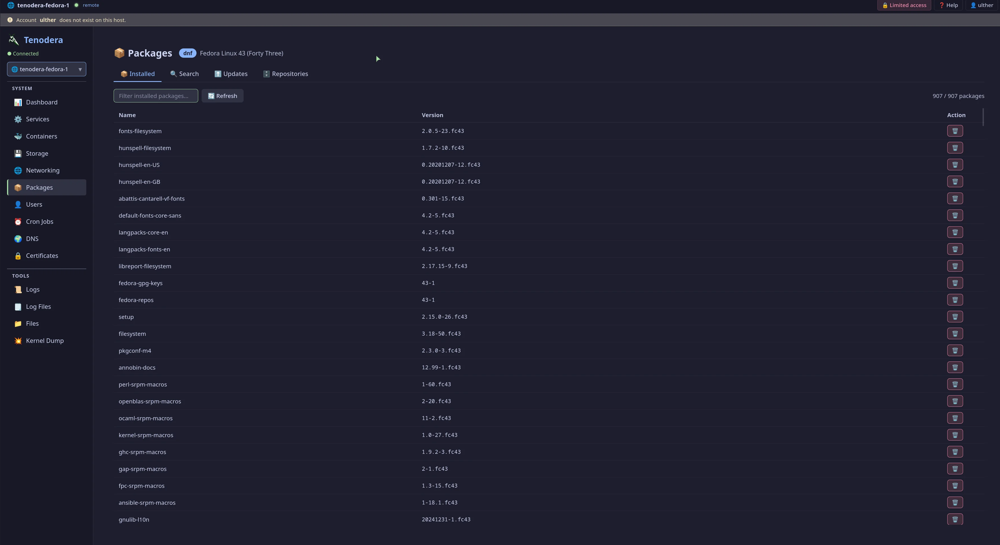
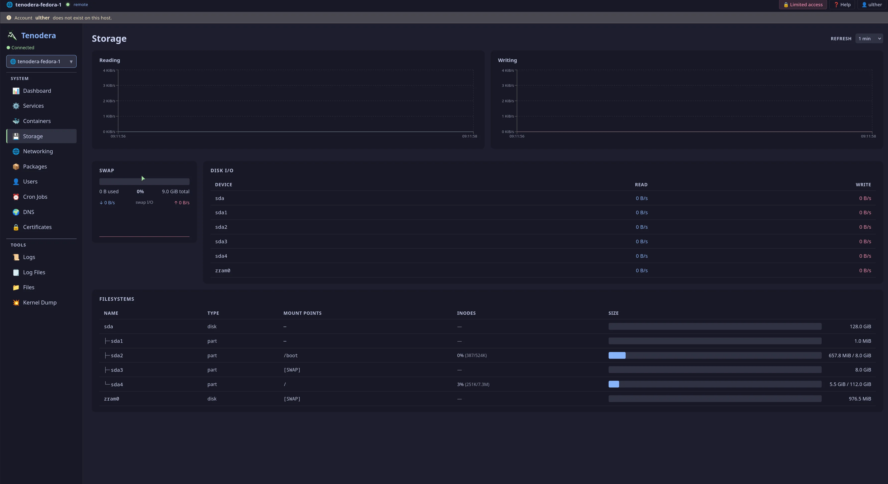
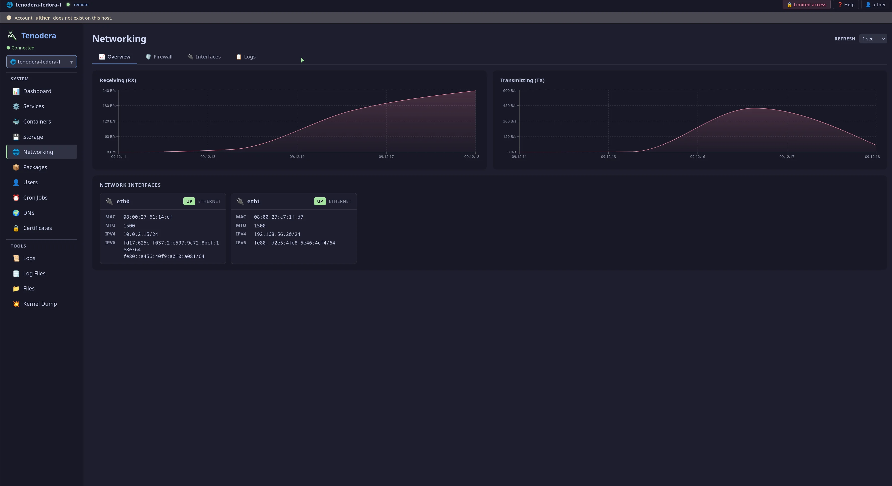
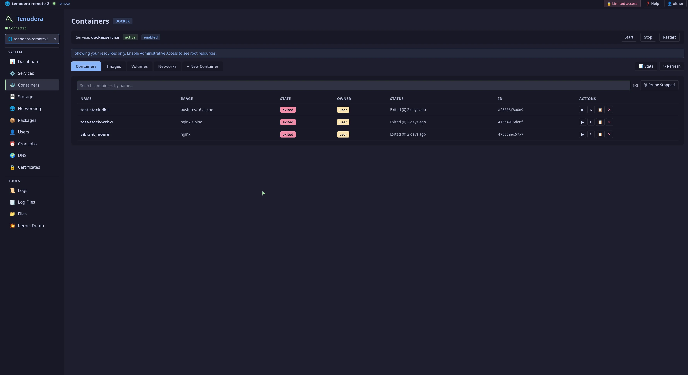
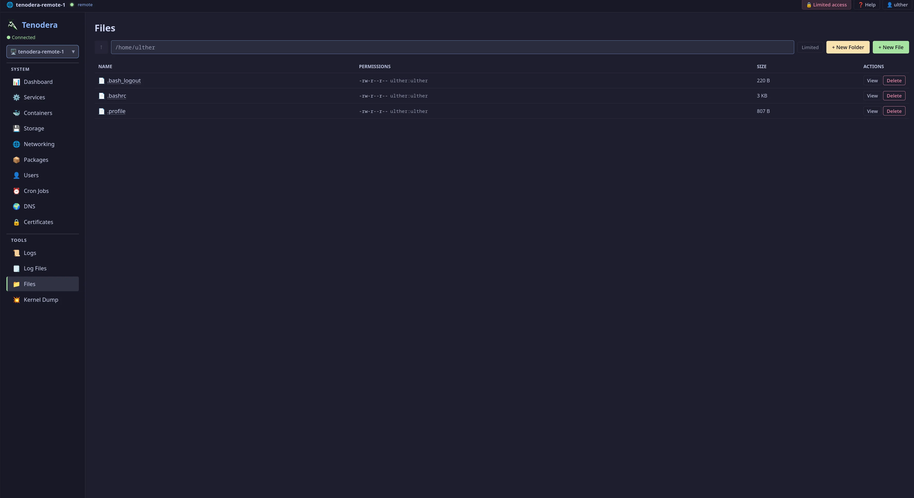
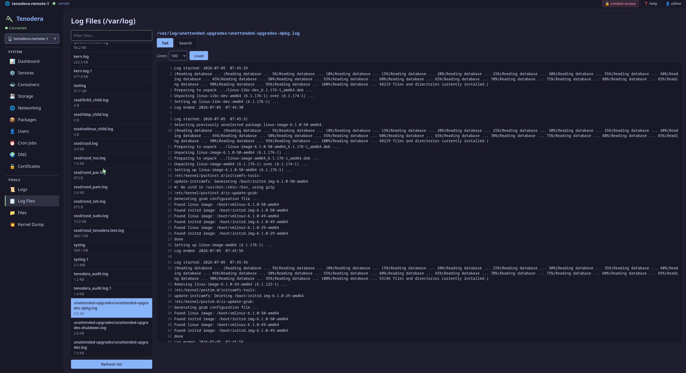
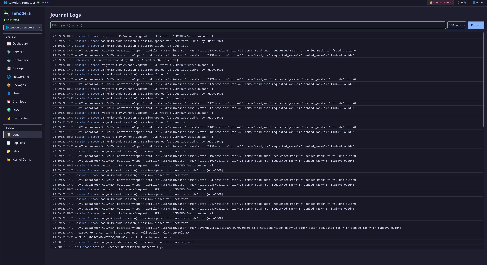
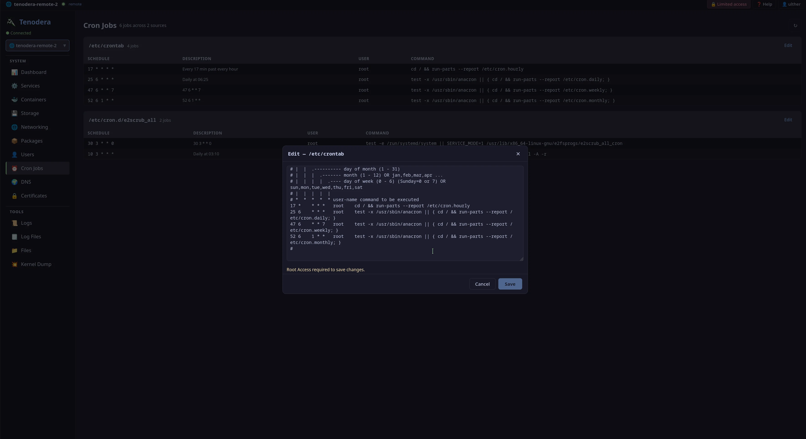
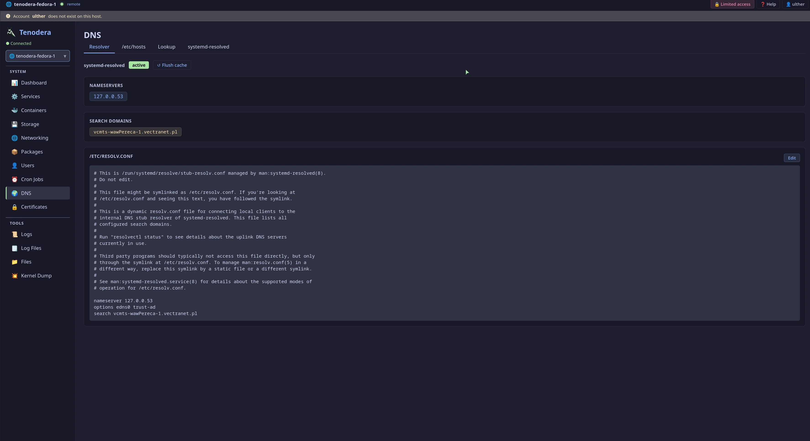
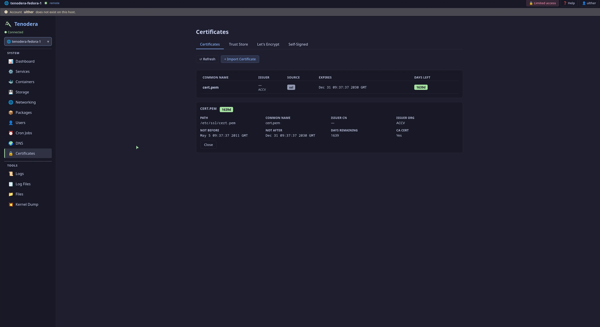
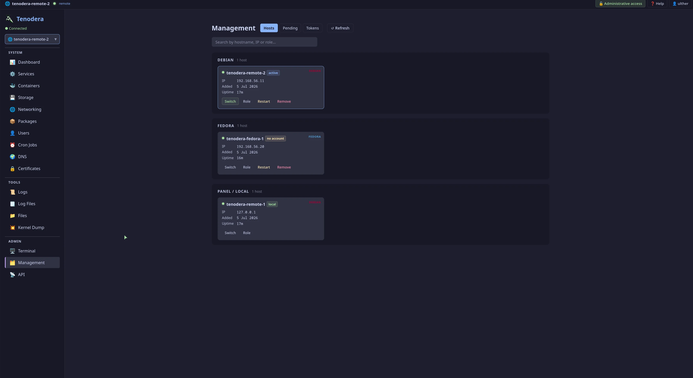
The installer handles everything: Rust, Node.js, build, binary install, systemd service. One command on the panel host, one on each managed host.
# Install panel on your gateway host curl -sSfL https://raw.githubusercontent.com/ultherego/Tenodera/main/tenodera.sh | sudo bash # Access at http://<host>:9090 — log in with any system user
Supported: Debian, Ubuntu, RHEL, Fedora, Arch — any Linux with systemd and x86_64.
Agents connect outbound — the gateway never initiates connections to managed hosts. All communication is multiplexed over a single authenticated WebSocket per host.